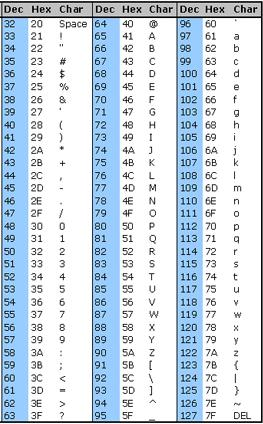
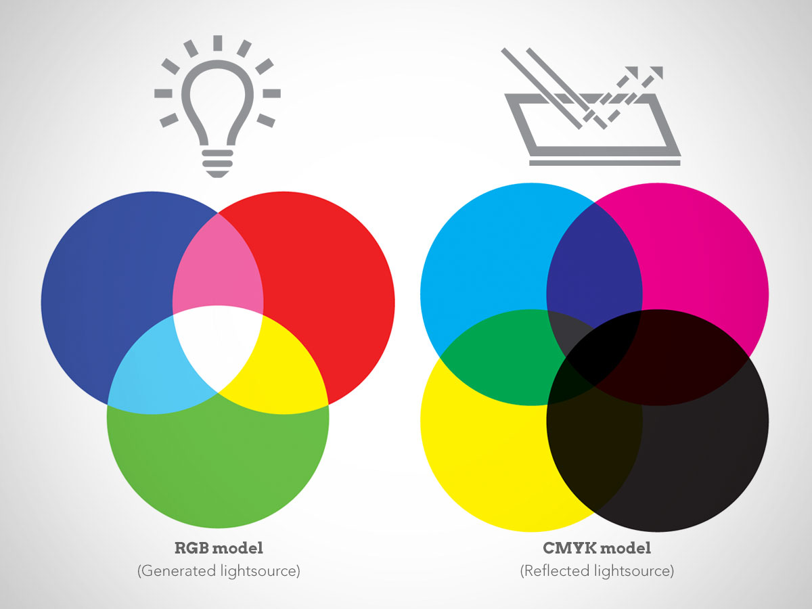

Rappresentazione delle Informazioni
In questo capitolo vedremo come funziona sommariamente il sistema di numerazione binario e lo utilizzeremo per cercare di rappresentare alcune delle informazioni di base più importanti!
Il sistema binario
Il sistema di numerazione binario è un sistema numerico posizionale e in base 2, cioè che utilizza solo 2 cifre, solitamente 0 e 1, per la rappresentazione di tutti i numeri.
Un sistema di numerazione posizionale è quello che da valore alle cifre di un numero a seconda della posizione che queste vi occupano.
Ad esempio nel numero decimale 37 tutti sappiamo benissimo che nonostante la cifra 3 sia più piccola della cifra 7, questa valga di più perché occupa la posizione delle decine, mentre la cifra più grande vale meno perché occupa la posizione delle unità
Questo modo di ragionare e di scrivere i numeri deriva dal fatto che siamo abituati a lavorare in base 10, poiché abbiamo 10 dita e fin da bambini il 10 era sempre il punto d'arrivo della conta sulla dita.
Nonostante ciò, altri modi di contare si sono sviluppati nella storia. Ad esempio le uova si contano a dozzine (per questo si vendono solitamente a gruppi di 6: due gruppi = una dozzina), i minuti e i secondi si contano a gruppi di sessanta, le ore a gruppi di 24 e così via.
Nell'aritmetica decimale esistono 10 cifre diverse (da 0 a 9) e quando si deve indicare un numero più grande di 9, si comincia a raggruppare mettendo in evidenza “a gruppi di 10”. Ecco che
Allo stesso modo si continua con le centinaia, che sono formate da 10 decine e così via. Ad esempio:
582 = 500 + 80 + 2
= 5 centinaia + 8 decine + 2 unità
= 5 x 100 + 8 x 10 + 2x1
= 5 x 10 alla 2 + 8 x 10 alla 1 + 2 x 10 alla 0
Notiamo soprattutto l'ultima rappresentazione. In questo modo si può indicare ogni gruppo con un indice dato dalla potenza da assegnare alla base per ottenerne il peso. Infatti le unità sono il gruppo 0 (100 = 1), le decine sono il gruppo 1 (101 = 10), le centinaia il gruppo 2 (102 = 100) e così via praticamente all'infinito.
Se lavoriamo in base 2 con solo 2 cifre, gli unici numeri facili da rappresentare saranno proprio 0 e 1, mentre per 2 dovremo già iniziare a raggruppare. Così ad esempio:
Vediamo i primi 10 numeri rappresentati nel sistema di numerazione binaria:
| Decimale | Binario |
|---|---|
| 0 | 0 |
| 1 | 1 |
| 2 | 10 |
| 3 | 11 |
| 4 | 100 |
| 5 | 101 |
| 6 | 110 |
| 7 | 111 |
| 8 | 1000 |
| 9 | 1001 |
Seguendo l'esempio precedente potremo stabilire una rappresentazione dei valori indicati in un numero binario:
1001 =
= 1 x 23 + 0 x 22 + 0 x 21 + 1 x 20 =
= 1 x 8 + 0 x 4 + 0 x 2 + 1 x 1 =
= 8 + 0 + 0 + 1 = 9
In questo modo dato un qualsiasi numero binario (una sequenza di zeri e uni), potremo stabilire quale quantità esso rappresenti in decimale semplicemente applicando la metodologia appresa.
Quale valore rappresenta il numero binario 101011?
101011 =
= 1 x 25 + 0 x 24 + 1 x 23 + 0 x 22 + 1 x 21 + 1 x 20 =
= 1 x 32 + 0 x 16 + 1 x 8 + 0 x 4 + 1 x 2 + 1 x 1 =
= 32 + 0 + 8 + 0 + 2 + 1 =
= 43
Al contrario se vogliamo capire qual è la rappresentazione binaria di un numero decimale dobbiamo utilizzare la tecnica delle divisioni (intere) successive.
Ad esempio, dato il numero 35, la sua rappresentazione binaria si ottiene dividendo (con resto) successivamente il numero fino ad ottenere quoziente zero; alla fine si prende la fila dei resti ottenendo una sequenza di zeri e uni che sono il numero binario.
35 / 2 = 17 con resto di 1
17 / 2 = 8 con resto di 1
8 / 2 = 4 con resto di 0
4 / 2 = 2 con resto di 0
2 / 2 = 1 con resto di 0
1 / 2 = 0 con resto di 1
da cui si desume che
Esercizi
Esercizio 301
Convertire in binario i seguenti numeri decimali:
Esercizio 302
Convertire in decimale i seguenti numeri binari:
Il sistema esadecimale
Il sistema di numerazione esadecimale (a base 16) viene molto utilizzato in informatica per la sua relazione diretta fra una cifra decimale e quattro cifre binarie. Questa deriva direttamente dal fatto che 16 è una potenza di 2 (24 = 16).Viene dunque spesso utilizzato come “intermediario”, cioè come strumento di rappresentazione dei numeri binari quando questi sono troppo lunghi.
Essendo un sistema a 16 cifre si utilizzano nella sua rappresentazione anche le prime 6 lettere dell'alfabeto (A, B, C, D, E, F).
| DEC (base 10) | BIN (base 2) | HEX (base 16) |
|---|---|---|
| 0 | 0000 | 0 |
| 1 | 0001 | 1 |
| 2 | 0010 | 2 |
| 3 | 0011 | 3 |
| 4 | 0100 | 4 |
| 5 | 0101 | 5 |
| 6 | 0110 | 6 |
| 7 | 0111 | 7 |
| 8 | 1000 | 8 |
| 9 | 1001 | 9 |
| 10 | 1010 | A |
| 11 | 1011 | B |
| 12 | 1100 | C |
| 13 | 1101 | D |
| 14 | 1110 | E |
| 15 | 1111 | F |
Vista la contemporanea frequenza di numeri e lettere, per indicare che una sequenza è un numero esadecimale, si usa preporre la sigla 0x, così che il numero 0x11 sia il numero esadecimale 11 (e non ad esempio l'11 decimale o il 3 binario).
Per convertire un numero esadecimale in binario, basta solo consultare la tabella e apportare le opportune sostituzioni, in modo che, ad esempio, il numero esadecimale 0x3F5,
corrisponda al numero binario:
Da cui
Analogamente se il nostro obiettivo è trasformare un numero binario in esadecimale basterà solo suddividere le sue cifre a gruppi di 4 e osservare la tabella.
Ad esempio, il numero binario 11101 si può dividere nei due gruppi da 4 0001 e 1101: il gruppo più a sinistra si può solitamente rendere da 4 aggiungendo zeri a piacere.
Da cui:
Quindi la sequenza binaria 11101 si rappresenta in esadecimale come 1D:
Ok… adesso facciamo qualche esercizio per assicurarci che tutti abbiano capito :)
Esercizi
Esercizio 311
Convertire i seguenti numeri in binario e rappresentarli secondo la notazione esadecimale:
Esercizio 312
Calcolare il numero binario e il numero decimale corrispondente al seguente numero esadecimale:
Rappresentazioni binarie
Nella prossima disamina andremo a vedere le applicazioni principali dei sistemi di numerazione binario ed esadecimale in informatica.
I concetti di base sono facili: le memorie funzionano con tecnologie di tipo elettrico (acceso/spento) oppure elettromagnetico (polo positivo/polo negativo), quindi ogni tipo di dato, per essere memorizzato, deve essere convertito in binario.
Di seguito alcune spiegazioni su come sono convertiti in binario alcuni tipi di dati. Si inizia con i numeri, interi e reali, si passa ai caratteri, fino ad arrivare ai file veri e propri.
Cominciamo!
I Numeri interi
In informatica i numeri interi sono un sottoinsieme finito dei numeri interi così come sono definiti in matematica. Questo ovviamente perché lo scopo della trattazione dei numeri interi in informatica, così come di ogni altro tipo di dato è la mera digitalizzazione, elaborazione e memorizzazione su supporto fisico.
In genere lo spazio destinato ad un numero intero è uno spazio fisso, grande come la lunghezza di parola della CPU che lo dovrà elaborare. Attualmente le più comuni CPU in commercio hanno una lunghezza di parola di 64 bit.
Vediamo di mettere bene in evidenza le differenze fra ciò che in matematica siamo soliti chiamare un numero intero e ciò che questo è in informatica:
| In matematica | In informatica |
|---|---|
| l'insieme degli interi è infinito | l'insieme degli interi è finito e ben definito |
| Ogni numero viene rappresentato solo con il numero di cifre necessarie | Tutti i numeri interi hanno lo stesso numero di cifre |
| I segni +/- vengono indicati, solitamente davanti al numero (es: -17, + 13) | I segni +/- sono compresi nella rappresentazione del numero intero |
Semplificazione
Per semplificare calcoli e ragionamenti, gli esempi sottostanti sono sviluppati con parole di 16 bit invece di 64!!!
I concetti si capiscono ugualmente... ma i calcoli sono molto più semplici (e le sequenze di zeri e/o di uni hanno un termine!)
Per la rappresentazione dei numeri interi, occorre distinguere fra numeri positivi e negativi.
Il caso dei numeri positivi è molto semplice, dato un numero, ad esempio 35, bisognerà prima di tutto verificare se appartiene al range dei numeri rappresentabili
(a 16 bit sono rappresentabili numeri fino a 5 cifre, positivi e negativi. A 64 bit si sale fino a numeri di 20 cifre...) .
In seguito procedere alla trasformazione binaria:
Ovviamente, davanti a questa cifra dobbiamo mettere un botto di zeri, fino a rappresentare un numero con 16 cifre! Capite bene la comodità della rappresentazione esadecimale 
Nel caso di numeri negativi, ad esempio -19, verificata l'appartenenza al range di rappresentazione, bisognerà utilizzare la cosiddetta tecnica del “complemento a due”,
eseguendo le seguenti operazioni:
- prendere la parte positiva e trasformarla in binario:
da -19 si prende la parte positiva che è 19. La rappresentazione binaria di 19 è:
- Riempire il numero con gli zeri davanti fino a 16 cifre:
- Rovesciare la rappresentazione, invertendo ZERI e UNI
- Si aggiunge UNO
Da cui, la rappresentazione del numero diventa:
Con la tecnica del complemento a due, il primo bit a sinistra è indice del segno del numero rappresentato e precisamente tutti i numeri che iniziano con ZERO sono positivi, mentre tutti i numeri che iniziano per UNO sono negativi.
I Numeri reali (standard IEEE 754)
L'insieme dei numeri reali è un insieme infinito e denso; in matematica “denso” significa che presi comunque due numeri reali, esistono sempre infiniti numeri compresi fra loro.
I numeri reali rappresentabili in informatica (e memorizzabili nelle memorie dei PC) sono però chiaramente solo un insieme finito e discreto (il contrario di denso). Questo significa che i numeri rappresentabili sono tutti compresi in un intervallo finito e che anche all'interno di quell'intervallo sono una minuscola parte di numeri può essere rappresentata.
In ogni caso, la rappresentazione dei reali è uno dei argomenti più dibattuti e su cui si sono concentrati gli sforzi negli anni. A livello di rappresentazione, il concetto che ha avuto la meglio sugli altri è il metodo definito “a virgola mobile” o floating point number, rinominato in standard IEEE 754.
Vediamo il procedimento di trasformazione di un numero reale nella sua rappresentazione.
- Il numero reale deve essere prima rappresentato in binario, convertendo opportunamente la parte intera e la parte frazionaria.
- Il numero binario così ottenuto viene trasformato in notazione esponenziale normalizzata, cioè nella forma:
±M x 2E
dove 1.0 ≤ M ≤ 2.0
Usando la forma esponenziale normalizzata, per identificare un numero sono necessarie 3 informazioni:
- segno (S)
- esponente (E)
- mantissa (M)
Lo standard IEEE 754 prevede che un numero reale venga rappresentato con 64 bit così suddivisi:
- 1 bit per il segno
- 11 bit per l'esponente
- 52 bit per la mantissa
Basta! Mi fermo qui. Mi sembra sufficiente…
I caratteri
Una codifica per i caratteri che si vogliono rappresentare è definita dalla corrispondenza tra l'insieme di caratteri che si vogliono rappresentare e le parole di un codice.
Nel nostro caso il codice utilizza cifre binare con un numero di bit non sempre predefinito. L'insieme di caratteri che si vuole rappresentare invece è formato da tutte le lettere, le cifre e i simboli (genericamente, caratteri) necessari per formare le parole di un linguaggio.
Per un certo insieme di caratteri possono esistere quindi codifiche diverse: con un numero diverso di bit per la codifica, con una corrispondenza diversa codice-carattere e così via.
In generale, per definire un set di caratteri occorre:
- l'insieme di codici utilizzato
- l'insieme di caratteri da rappresentare
- una corrispondenza fra questi.
Codifica US ASCII

La codifica US ASCII (American Standard Code for Information Interchange) è il primo set di caratteri congegnato che ha avuto diffusione internazionale.
Nella sua versione estesa, essa rappresenta un set di 256 caratteri utilizzando numeri binari a 8 cifre. Infatti con 8 cifre binarie si possono rappresentare 28 = 256 numeri diversi.
La codifica ASCII utilizza quindi una corrispondenza biunivoca carattere-codice, ove:
- Gli elementi da 0 a 31 sono i cosiddetti “caratteri di controllo”.
- Gli elementi da 32 a 126 sono i cosiddetti “caratteri stampabili” (vedi tabella a fianco).
- Gli elementi da 128 a 255 fanno parte del cosiddetto set esteso di caratteri.
Standard ISO 8859
Osservando meglio la tabella ASCII ci si accorge della carenza di molti caratteri in uso nelle lingue più comuni; citando solo l'italiano, mancano ad esempio tutte le lettere accentate. Di fatto solo per inglese, latino e swahili sono sufficienti i 128 caratteri di base e per colmare questa mancanza si utilizzano codici a 8 bit in cui anche il bit più significativo cambia valore.
Nella realtà però non esiste un unico codice (ASCII “esteso”) a 8 bit, ma ne esistono tanti, chiamati anche tabelle di codici. Tutti le tabelle di codici sono comunque compatibili con ASCII, cioè rimangono identiche nella rappresentazione dei primi 127 caratteri.
Vediamo un elenco degli standard ISO 8859 più famosi e utilizzati in qualche parte del mondo:
| ISO 8859-1 | Lingue europee occidentali |
|---|---|
| ISO 8859-2 | Lingue europee orientali |
| ISO 8859-5 | Cirillico |
| ISO 8859-6 | Arabo |
| ISO 8859-8 | Ebraico |
| ISO 8859-11 | Thailandese |
| ISO 8859-15 | Lingue europee occidentali con l'Euro |
Questo significa che ognuno di queste codifiche ha gli stessi caratteri nei primi 128 posti (numeri binari a 8 bit con cifra più significativa uguale a zero), mentre rappresentano caratteri diversi
Codifica UNICODE
La codifica ISO 646 a 8 bit non è adatta per le lingue orientali che usano migliaia di ideogrammi ciascuno dei quali corrisponde non ad una lettera, ma ad un intero concetto.
Per questo è necessaria una codifica che utilizzi almeno 16 bit (e possa rappresentare quindi fino a 65.536 caratteri).
La risposta a questa necessità sta nella cosiddetta codifica UNICODE. Questa codifica viene utilizzata nei sistemi operativi Microsoft Windows (per la memorizzazione dei nomi dei file e dei simboli) e dal linguaggio di programmazione Java per la codifica di tutti i caratteri.
Inoltre Unicode ha l'importante proprietà che i suoi primi 128 caratteri sono identici a quelli del codice ASCII e i primi 256 allo standard ISO 8859-1.
Tuttavia però due serie di motivi hanno portato Unicode a non affermarsi quale standard unico e assoluto, come i suoi creatori avrebbero voluto. Questi problemi sono:
- Retrocompatibilità. Poiché Unicode utilizza sempre 16 bit per ogni carattere, la compatibilità con i set a 8 bit non è sempre banale.
- Spreco di spazio. Poiché ogni carattere sarebbe passato da dimensione 1 a 2 byte, tutti i file sarebbero automaticamente aumentati, a volte raddoppiati di dimensione, molto spesso senza alcuna necessità.
Codifica UTF-8
UTF-8 è una codifica dei caratteri UNICODE in sequenze di lunghezza variabile di byte (da 1 a 4). Questo significa che tramite UTF-8 è possibile rappresentare tutti i caratteri esistenti per tutte le lingue conosciute esattamente come con UNICODE, ma mentre quello prevede una lunghezza fissa dei caratteri a 2 bytes, con UTF-8 la codifica varia da 1 a 4 bytes (4 sole possibili alternative; niente pezzi di byte).
Per esempio un solo byte è necessario per rappresentare i primi 128 caratteri ASCII, rendendo queste due importanti codifiche vagamente compatibili tra loro.
L'organismo IETF (Internet Engineering Task Force), la comunità di tecnici e specialisti che si occupa dello sviluppo e della promozione delle tecnologie del web, richiede che tutti i protocolli internet identifichino la codifica di caratteri che utilizzano e che siano compatibili almeno con UTF-8.
Esercizi
Esercizio 321 (interi)
Scrivere la rappresentazione esadecimale (a 16bit) dei seguenti numeri interi:
Esercizio 322 (reali)
Scrivere la rappresentazione esadecimale (a 16bit) dei seguenti numeri reali:
Esercizio 323 (caratteri)
Convertire in byte, secondo la specifica ASCII le seguenti frasi:
frase 1) "un, due, tre, stella!"
frase 2) "abracadabra"
frase 3) "ASCII si pronuncia aschi, come il cane"
Formati dei file
In informatica, il formato di un file è la convenzione che viene utilizzata per organizzare, memorizzare e recuperare i contenuti di un file. Questo, per l'utente che utilizza il sistema, si traduce nella possibilità di poter visualizzare, interpretare e modificare (più o meno) a piacimento i contenuti di un file.
Poiché un file rimane sempre e comunque una sequenza ordinata di byte (ed esistono solo 256 byte diversi) i formati stabiliscono una convenzione di interpretazione per il gruppo di byte che compone il file in questione.
L'identificazione di un formato (testo, immagine, multimedia, ecc..) viene di solito ottenuta dal Sistema Operativo, tramite una (o più insieme) di queste tecniche:
Estensione del file
si è soliti indicare alla fine del nome del file, una sequenza (lunga 3 lettere per motivi storici) che ne identifica il formato. Ad esempio il file “pippo.txt” è un file di testo, mentre il file “pluto.jpg” una immagine.
Magic number
I primi due o più byte di un file fanno da identificatori di un tipo di file. Ad esempio la sequenza 0x3533 identifica uno script di shell (linux), mentre la sequenza 0xFFD8 identifica una immagine .jpg
Metadati
Alcuni filesystem (ad esempio HFS) affiancano informazioni relative ad esso, tra cui il formato.
Qua nel seguito introduciamo, almeno in parte, tre tra i formati più semplici e famosi, per meglio interpretare i concetti introdotti.
Il formato plain text
Il formato plain text è il più semplice formato di file esistente. È un formato di puro testo con corrispondenza (quasi sempre) 1 a 1 tra i byte contenuti e una particolare codifica come ASCII o ISO 8859.
Ovviamente lo scopo per cui sono nati i file di testo, e tutt'ora un utilizzo molto frequente, è la lettura/scrittura diretta da parte degli utenti. La mancanza di formattazione li rende poveri dal punto di vista estetico, ma in compenso grazie a questa semplicità non occorrono particolari programmi per leggerli, e spesso possono essere trasferiti direttamente da un sistema operativo all'altro.
Per questo quasi tutti i software sono accompagnati da un file di testo semplice che ne dà una breve descrizione, spesso chiamato leggimi (o README in inglese). Anche il codice sorgente dei programmi viene scritto in puro testo.
Ci sono alcune limitazioni all'universalità dei file di testo:
- La codifica non è sempre ovvia, e quando il sistema non la riconosce o non la supporta, il file diventa illeggibile.
- I maggiori sistemi usano notazioni diverse per il carattere di a capo: MAC OS usa CR (Carriage Return, ASCII 13), UNIX usa LF (Line Feed, ASCII 10), Windows usa CR/LF.
Immagini bmp
Il formato di file BITMAP, come dice il nome, prevede una semplice mappa dei bit che compongono l’immagine.
La struttura del file è molto semplice, perché è possibile suddividerla in tre parti:
- bitmap file header (14 byte), che contiene informazioni come la grandezza del file (es: 1000x500);
- bitmap info header (40 byte), con informazioni tipo la mappa dei colori usata e la sua profondità (quanti byte per un colore?)
- mappa dei pixel (altezza x larghezza x profondità del colore) la struttura che identifica l'immagine.
Gestione dei colori

Si rappresentano in informatica in 2 modalità:
Sintesi Additiva (RGB)
La sintesi delle luci: se punti una luce rossa nello stesso punto di una luce verde, vedi un colore giallo.
I colori fondamentali sono Rosso (Red), Verde (Green), Blu (Blue).
La somma dei 3 colori fondamentali fa il BIANCO!!!
Ogni colore fondamentale costa un byte, quindi ogni colore "pesa" 3 byte, ovvero sono rappresentabili 224 colori diversi: circa 16 milioni di colori!
Il web utilizza questa sintesi dei colori.
La sua rappresentazione è data dai 3 byte, tipicamente indicati con la sintassi esadecimale:
Ad indicare che i primi 2 numeri rappresentano il byte che indica la quantità di rosso presente, i secondi la quantità di verde, gli ultimi la quantità di blu.
Sintesi Sottrattiva (CMYK)
La sintesi dei colori a tempera: mischi rosso e giallo e viene arancione.
I colori fondamentali sono i colori complementari dei colori primari della sintesi additiva: Blu Ciano (C) come complementare del Rosso, Rosso Magenta (M) complementare del Verde e Giallo (Y) complementare del Blu. In questa sintesi inoltre si indica anche il grigio (K).
La somma dei 3 colori fondamentali fa il NERO!!!!
Ogni colore fondamentale costa un byte, quindi ogni colore "pesa" 4 byte, ovvero sono rappresentabili 232 colori diversi: circa 4 miliardi di colori!
Questa particolare sintesi, seppure più pesante della precedente, permette di arrivare ad un numero quasi incredibile di colori diversi. La presenza del grigio come colore primario permette nella realtà una implementazione dei colori Nero e Bianco più che perfetta: avete mai sentita la pubblicità delle TV che fanno vedere un nero bellissimo?! Bene… quelle TV "colorano" lo schermo di nero invece di tenerle spente. Usano CMYK!!!